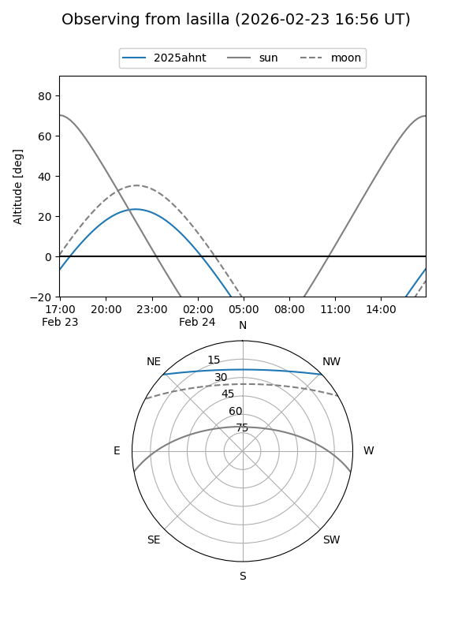
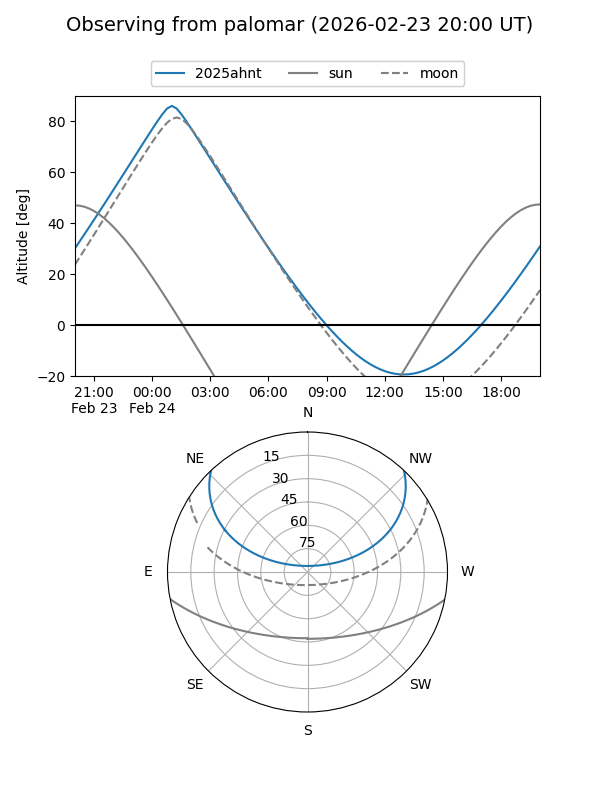
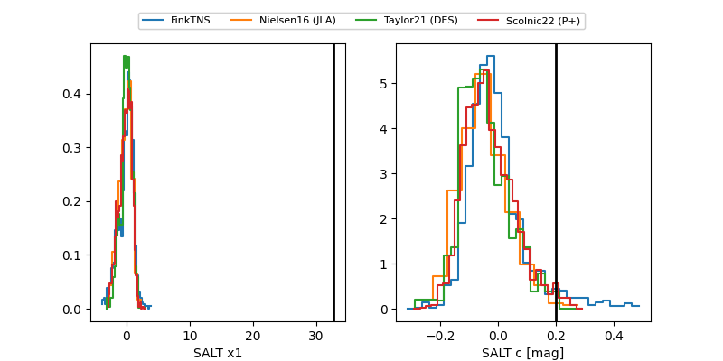

2025ahnt
Target 2025ahnt at 2026-01-09 12:49
Aliases and brokers:
FINK: link
Lasair: link
ALeRCE: link
TNS: link
YSE: link
alt names
ZTF25aciywpw (ztf,fink_ztf)
2025ahnt (tns,yse)
PS25kww (panstarrs)
Coordinates:
equatorial (ra, dec) = 51.8573,+37.14606
equatorial (HMS+DMS) = 03:27:25.75,+37:08:45.83
galactic (l, b) = (154.3901,-16.02076)
Flags:
Photometry:
last ztfg=20.23, ztfr=19.67
2 ztfg, 2 ztfr detections
Lightcurve

Visibility


Additional plots
